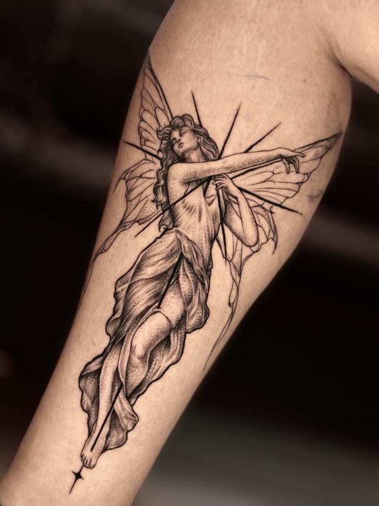
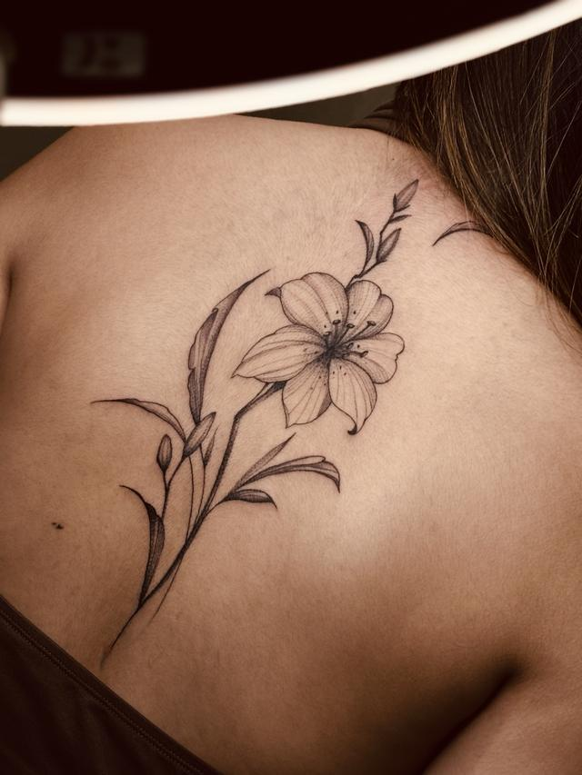
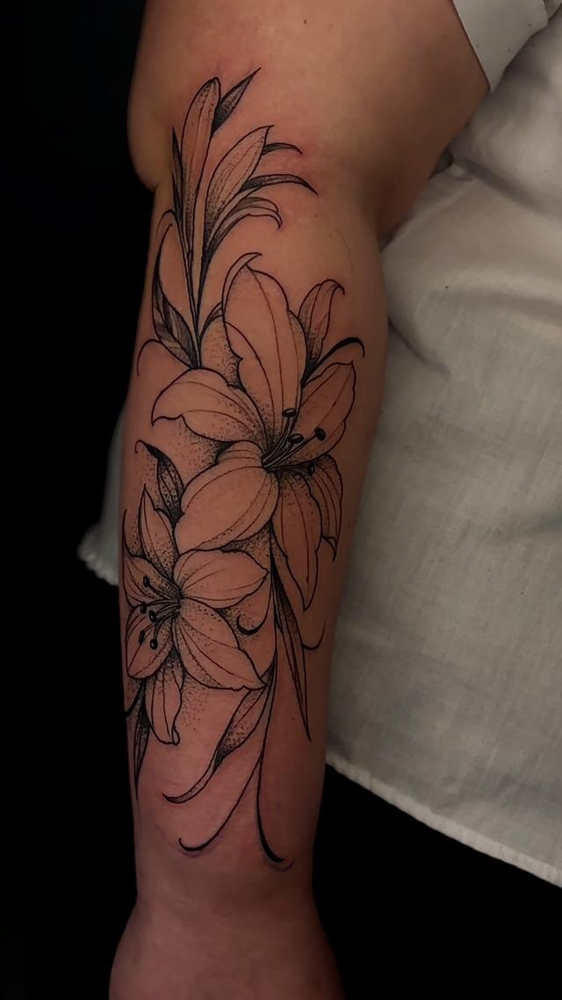

Especialidade
Tatuagem delicada e fine line
Traço fino parece a tatuagem mais simples de fazer e é o contrário: tem menos tinta sustentando o desenho, então tamanho, região e espaçamento decidem se a peça vai continuar legível daqui a cinco anos.
01 — O traço
Por que fine line é técnico
Uma linha fina é uma linha com pouca tinta. Se ela for aplicada fundo demais, espalha embaixo da pele e engrossa com o tempo; rasa demais, ela clareia na cicatrização e some em trechos. A margem entre as duas coisas é pequena, e é ela que separa uma peça delicada de uma peça borrada.
Daí vêm as duas regras que eu sigo: espaçamento e tamanho honesto. Duas linhas finas muito próximas viram uma linha grossa só depois de cicatrizar — então o desenho precisa nascer com respiro entre os traços. E um desenho com muito detalhe reduzido a três centímetros não é delicado: é um detalhe que vai desaparecer.
Onde o traço fino dura mais
- Antebraço, braço interno
- Costas e omoplata
- Coxa e panturrilha
Onde dura menos
- Mão, dedo e pulso: atrito constante
- Pé e tornozelo: atrito de calçado
- Costela e lateral: pele que estica
Isso não quer dizer que não se faça nessas regiões. Quer dizer que eu digo antes que a peça ali vai pedir retoque mais cedo — e prefiro que você saiba disso antes, não depois.
Peças
Peças delicadas
Fine line e floral, em antebraço, costas e perna.



O acervo completo fica no portfólio, e os trabalhos mais recentes saem primeiro no Instagram @andretatuadoor.
02 — O desenho
O que a peça quer dizer
Quase todo projeto delicado começa por um elemento que significa algo: a flor que marca uma passagem, o animal que representa alguém, a figura que lembra uma fase. Eu trabalho com o simbolismo tradicional do elemento — o lírio como pureza e recomeço, o que floresce depois do inverno; a fada como leveza, o que ainda acredita em magia.
Se a sua história for o motivo da tattoo, ela fica entre nós: não publico história de cliente sem autorização. O que vai para o site é a peça e o simbolismo.
Dúvidas
O que mais me perguntam
Dói menos porque é delicada?
A dor muda com a região, não com a espessura do traço. Antebraço e coxa incomodam menos; costela, pé e perto do osso incomodam mais. Peça pequena tem a vantagem de ser rápida, e isso costuma pesar mais do que a intensidade em si.
É a minha primeira tatuagem. Como funciona?
Igual a qualquer outra, com uma conversa a mais: eu explico o que você vai sentir, quanto tempo leva e como é a cicatrização, antes de marcar. Durma bem, coma antes de vir e evite álcool nas 24 horas anteriores. Atendimento somente para maiores de 18 anos, com documento com foto no dia.
Tatuagem fina precisa de retoque sempre?
Não sempre, mas a chance é maior em região de atrito. A regra da casa é a mesma de qualquer peça: a partir de 40 dias da sessão, depois de eu avaliar por foto ou pessoalmente. Falha minha na aplicação, retoque sem custo.
Dá para fazer com cor?
Dá. Fine line com aquarela e peças delicadas em cor estão no repertório — o foco da casa é preto e cinza, mas não é uma limitação. Mande a referência que eu digo o que funciona naquele tamanho.
Me conta a sua ideia
Manda a referência, a região do corpo e o tamanho que você imagina. Eu avalio o projeto e respondo pessoalmente.
Av. Melchert, 606 — Vila Matilde, São Paulo. Todos os dias, das 9h às 22h, somente com hora marcada. Atendimento para maiores de 18 anos.